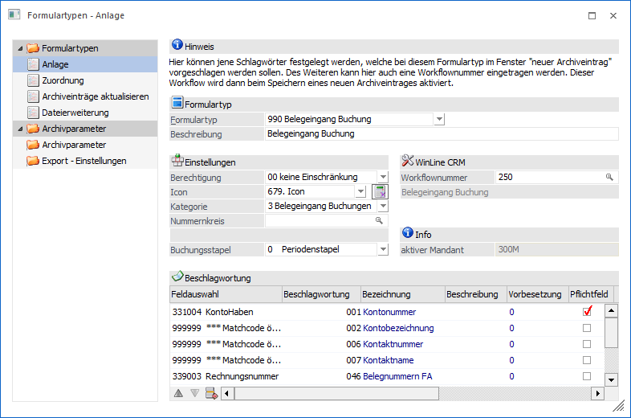
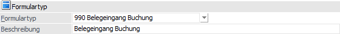
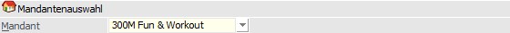
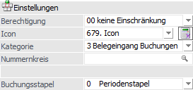
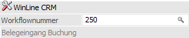
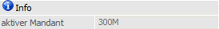
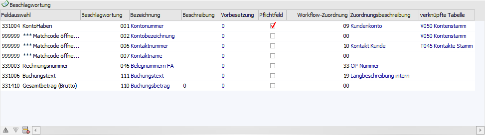
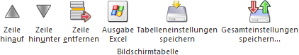
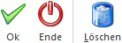

In dem Bereich "Formulartypen - Anlage", welcher über…
1 WinLine ADMIN
1 Archiv
1 Formulartypen
1 Bereich "Formulartypen - Anlage"
… geöffnet werden kann, erfolgt die Anlage von Formulartypen.

Folgende Eingabefelder stehen zur Verfügung:
Formulartyp

Ø Formulartyp
Aus der Auswahlliste kann ein bestehender Eintrag gewählt werden. Wenn ein neuer Formulartyp angelegt werden soll, so muss die Option "<neuer Eintrag>" gewählt werden.
Hinweis
Bei der ersten Auswahl eines Formulartyps wird über die folgende Auswahl der Mandant abgefragt, in dessen Kontext mit dem Formulartyp (Nummernkreis und CRM) gearbeitet werden soll.

Ø Beschreibung
Hier wird die Beschreibung des Formulartyps eingetragen.
Einstellungen

Ø Berechtigung
Für jeden Formulartyp kann ein Berechtigungsprofil vergeben werden. Wenn der Anwender einen Formulartyp aufruft, wird geprüft, ob der Anwender einer Benutzergruppe zugeordnet wurde, welche in dem jeweiligen Profil enthalten ist und ob somit eine Betrachtung bzw. Bearbeitung erlaubt wäre (nähere Informationen entnehmen Sie bitte dem WinLine ADMIN - Handbuch).
Achtung
Bei einer nachträglichen Änderung der Berechtigung wird die neue Einstellung während des Speicherns direkt an die bereits bestehenden Archiveinträge, welche den Formulartyp hinterlegt haben, übergeben!
Hinweis
Benutzern des Typs "Administrator" oder mit der Administratorenberechtigung "Benutzeradministrator" steht in der Auswahlbox der Punkt ">> Neues Profil" zur Verfügung. Über die Anwahl dieses Eintrags kann in der Folge ein neues Berechtigungsprofil angelegt werden.
Ø Icon
An dieser Stelle kann einem Formulartyp ein spezielles Symbol zugeordnet werden. Dieses Symbol wird dann in der Archivsuche bei allen Archiveinträgen angezeigt, die dem Formulartyp bei der Archivierung zugeordnet wurden. Es stehen dabei unterschiedliche Icons zur Auswahl zur Verfügung.
Hinweis
Wenn dem Formulartyp kein Icon zugeordnet wird, dann wird in der Archivsuche das Standard-Windows-Icon angezeigt. Zusätzlich kann die Auswahl eines Symbols kann auch über das Fenster "Symbole" erfolgen. Durch einen Klick rechts neben der Auswahlliste wird dieses geöffnet.
Ø Kategorie
An dieser Stelle kann bestimmt werden, um was für eine Art von Formulartyp es sich handelt. Durch die Kategorie findet bei der Übergabe einer E-Mail an WinLine (aus Microsoft Outlook per "WinLine Archiv"-Button) eine direkte Zuordnung zu dem definierten Formulartypen statt. Es stehen hierbei die folgenden Auswahlmöglichkeiten zur Verfügung:
ü 0 - Standard
ü 1 - Posteingang
ü 2 - Postausgang
ü 3 - Belegeingang Buchungen
ü 4 - Belegeingang Belege
Hinweis
Die Kategorien "1 - Posteingang" und "2 - Postausgang" können jeweils nur einem Formulartyp zugeordnet werden. Wird versucht bei einem weiteren Formulartyp die Kategorie zuzuweisen, dann erscheint zunächst eine Sicherheitsabfrage, ob die Kategorie von dem bisherigen in den neuen Formulartyp übertragen werden soll.
Beispiel
In dem Formulartyp "003 - Ausgehende E-Mails" wurde die Kategorie "2 - Postausgang" hinterlegt. Wenn nun eine gesendete E-Mail aus Microsoft Outlook übergeben wird (per "WinLine Archiv"-Button), dann wird in WinLine automatisch der Programmbereich "Neuer Archiveintrag" geöffnet und der zu archivierenden E-Mail der Formulartyp "003 - Ausgehende E-Mails" zugeordnet.
Ø Nummernkreis
An dieser Stelle kann ein Archiv-Nummernkreis jenes Mandanten hinterlegt werden, welcher bei der ersten Auswahl eines Formulartyps gewählt wurde (siehe auch "aktiver Mandant"). Der Nummernkreis füllt automatisch das Schlagwort "014 - Dokumentenkreisnummer" und ist für folgende Funktionen eine zwingende Voraussetzung:
ü Etikettendruck
Für die Funktion
des "Etikettendrucks vor dem Scannen" muss hier ein Nummernkreis angegeben
werden. Beim Scannen eines Dokumentes, bzw. beim vorangehenden Etikettendrucks
wird anhand des Formulartyps und in weiterer Folge des Nummernkreises die zu
druckende (Dokumenten)Nr. ermittelt (und auch als Schlagwort "014 -
Dokumentenkreisnummer" gespeichert).
ü Drag & Drop in
Buchungsmaske
Damit bei einem Drag & Drop eines Dokuments in die
Buchungsmaske der WinLine FIBU eine Verbindung zwischen Archivdokument und
Buchungszeile aufgebaut werden kann, muss während der Archivierung das
Schlagwort "014 - Dokumentenkreisnummer" hinterlegt / ausgefüllt werden (diese
Nummer wird in die Buchung automatisch übergeben). Dieses findet automatisch
über die Verbindung "Formulartyp + Nummernkreis" statt.
Achtung
Die Vergabe der Dokumentenkreisnummer kann über die Spalte "Vorbesetzung" der Tabelle "Beschlagwortung" beeinflusst werden.
Ø Buchungsstapel
Wenn im Feld "Kategorie" die Auswahl "3 - Belegeingang Buchung" getroffen wurde, so kann im Eingabefeld "Buchungsstapel" ein abweichender Stapel hinterlegt werden. In diesen werden die vom "Beleg Pro - Import" erzeugen Buchungen abgestellt.
WinLine CRM

Ø Workflownummer
Über die Matchcodefunktion kann nach allen in WinLine angelegten CRM-Workflows bzw. CRM-Aktionen gesucht, ein entsprechender Eintrag gewählt und somit hinterlegt werden. Im zusätzlichen Infofeld wird die Bezeichnung des CRM-Schrittes angezeigt. Wird hier ein CRM-Workflow bzw. eine CRM-Aktion eingetragen, so wird beim Erfassen neuer Archiveinträge mit diesem Formulartyp automatisch ein Historienschritt bzw. Workflow geschrieben.
Info

Ø aktiver Mandant
An dieser Stelle wird jener Mandant angezeigt, welche bei der ersten Auswahl eines Formulartyps gewählt wurde. Auf Grundlage dieses Mandanten werden die Matchcodes der Nummernkreise und der Workflownummer mit Inhalt versehen.
Tabelle "Beschlagwortung"

In der Tabelle werden alle Schlagwörter hinterlegt, die automatisch bei der Archivierung zum Ausfüllen vorgeschlagen werden sollen. Die Beschlagwortung dient dabei in der späteren Archivsuche zum schnellen und einfachen Suchen der gewünschten Dokumente.
Hinweis
Während der eigentlichen Archivierung ist es ohne Probleme möglich weitere Schlagwörter manuell hinzuzufügen bzw. bestehende zu entfernen.
Ø Feldauswahl
Wenn im Formulartyp die Kategorie "3 - Belegeingang Buchungen" oder "4 - Belegeingang Belege" gewählt wurde, so steht die Spalte "Feldauswahl" zur Verfügung. Durch eine Hinterlegung von Variablen kann hier angegeben werden, welche Beleg PRO-Variablen an welche Schlagwörter übergeben werden sollen.
Ø Beschlagwortung
Die an dieser Stelle hinterlegte Beschlagwortung wird bei der Archivierung eines Dokumentes automatisch vorgeschlagen, wenn mit dem entsprechenden Formulartyp gearbeitet wird.
Ø Bezeichnung
In diesem Informationsfeld wird die Bezeichnung des gewählten Schlagwortes angezeigt.
Ø Beschreibung
An dieser Stelle eine zusätzliche Information, die den Zusammenhang zwischen dem Schlüsselfeld und den Dokumentinhalt näher beschreibt, hinterlegt werden. Hierbei ist darauf zu achten, dass die hier getätigte Eingabe auch den Standard-Eintrag bei der Archivierung eines neuen Dokuments darstellt. Erfolgt hier kein Eintrag, so werden die Daten - sofern vorhanden - vom Programm automatisch vorgeschlagen (z.B. Kontonummer, Kontoname, Tagesdatum).
Ø Vorbesetzung
In der Spalte "Vorbesetzung" kann eine Vorbesetzung in Bezug auf die Schlagwörter erfolgen:
ü 0 - Standard
Über die
"Standardeinstellung" wird gesteuert, dass das Schlagwort mit einem "globalen
Key" vorbelegt wird. D.h. ist als Schlagwort z.B. das Feld der Kontonummer
angegeben, wird dieses mit der zuletzt verwendeten Kontonummer (z.B. in der
Belegerfassung) vorbelegt.
Hinweis
Wird einer E-Mail an WinLine (aus Microsoft Outlook per "WinLine Archiv"-Button) übergeben, dann werden die Schlagwörter für die Beschlagwortung "001 - Kontonummer" und "006 - Kontaktnummer" automatisch mit dem korrekten Wert befüllt, wenn zuvor aus dem Personenkonto bzw. dem Ansprechpartner der entsprechende Outlook-Kontakt angelegt wurde.
ü 1 - keine Vorbelegung
Dabei
wird nie ein Wert vorbelegt.
ü 2 - gesperrt
Der vorbelegte
Wert kann beim Erzeugen eines neuen Archiveintrages nicht mehr editiert werden.
Z.B. bei Verwendung einer Dokumentenkreisnummer die automatisch vergeben wird
und nicht mehr veränderbar sein sollte.
Hinweis
Die Dokumentenkreisnummer (Schlagwort "014") wird immer automatisch vorbelegt, wenn…
ü … als Vorbelegung "UNGLEICH 1" (=keine Vorbelegung) angegeben wurde UND…
ü … beim Formulartyp ein gültiger Nummernkreis hinterlegt wurde.
Ø Muss-Feld
Durch Aktivieren dieser Option kann bestimmt werden, dass bei einem neuen Archiveintrag ein Feld mit einem Schlagwort befüllt werden muss. D.h. ohne eine Hinterlegung des Schlagwortes wäre eine Archivierung nicht möglich.
Hinweis
Bei der Archivierung
wird auf solch eine gekennzeichnete Beschlagwortung durch ein  in der Spalte "Pflichtfeld"
hingewiesen.
in der Spalte "Pflichtfeld"
hingewiesen.
Ø Workflow-Zuordnung
Nachdem unter "Workflownummer" ein CRM-Workflow oder eine CRM-Aktion hinterlegt wurde, kann an dieser Stelle ein entsprechendes CRM-Feld zugeordnet werden.
Das Schlagwort, welches bei der Archivierung für die Beschlagwortung eingetragen wird, wird an das entsprechende Feld in der Vorlage des CRM-Workflows bzw. der CRM-Aktion übergeben.
Ø Zuordnungsbeschreibung
An dieser Stelle wird die Beschreibung der "Workflow-Zuordnung" angezeigt.
Ø verknüpfte Tabelle
Bei speziellen Workflow-Zuordnungen (z.B. "09 - Kundenkonto" oder "31 - Projektnummer") werden im Hintergrund automatisch alle Details eines jeweiligen Schlagwortes geladen. Somit ist es möglich auf sämtliche Informationen des Datensatzes zuzugreifen.
Beispiel
Bei dem Formulartyp "002 - Eingehende E-Mails" wurde die CRM-Aktion "30008 - Eingehende Mails" hinterlegt. Zusätzlich wurde in der Beschlagwortung "001 - Kontonummer" eingetragen und dort die Workflow-Zuordnung "09 - Kontonummer" getroffen.
Wenn nun unter "Neuer Archiveintrag" der Formulartyp "002 - Eingehende E-Mails" verwendet wird und unter "001 - Kontonummer" die Kontonummer "230A001" (Annas Sportwelt) hinterlegt wird, dann stehen für die im Anschluss geöffnete CRM-Vorlage sämtliche Informationen des Personenkontos "230A001" zur Verfügung.
Tabellenbuttons

Ø Zeile hinauf / Zeile hinunter
Mittels "Zeile hinauf / Zeile hinunter"-Buttons können die Einträge innerhalb der Tabelle verschoben werden.
Ø Zeile entfernen
Mit dem Button "Zeile entfernen" wird die markierte Beschlagwortungszeile aus der Tabelle entfernt.
Ø Ausgabe Excel
Durch Anwahl des Buttons "Ausgabe Excel" wird der Inhalt der Tabelle an Microsoft Excel übergeben.
Ø Tabelleneinstellungen speichern
Die Spalten einer Tabelle können grundsätzlich an beliebige Positionen verschoben, bzw. in der Breite entsprechend angepasst werden. Durch Anwahl des Buttons "Tabelleneinstellungen speichern" werden die Einstellungen benutzerspezifisch gespeichert und bei dem nächsten Aufruf des Programmpunktes wieder vorgeschlagen.
Ø Gesamteinstellungen speichern
Im Gegensatz zu "Tabelleneinstellungen speichern" können mit "Gesamteinstellungen speichern" mehrere Tabellenaufbauten gespeichert und nach Wunsch geladen werden.
Buttons

Ø Ok
Durch Anwahl des Buttons "Ok" bzw. der Taste F5 wird die eingegebenen Definitionen gespeichert.
Ø Ende
Mit dem Button "Ende" bzw. der Taste ESC wird der Bildschirm verlassen, ohne dass Eingaben gespeichert werden.
Ø Löschen
Mit dem "Löschen"-Button wird der aktuelle Formulartyp gelöscht. Dabei wird geprüft, ob der Dokumententyp in Archivdokumenten verwendet wird. Nach Bestätigung einer Sicherheitsabfrage kann der Formulartyp endgültig gelöscht werden.